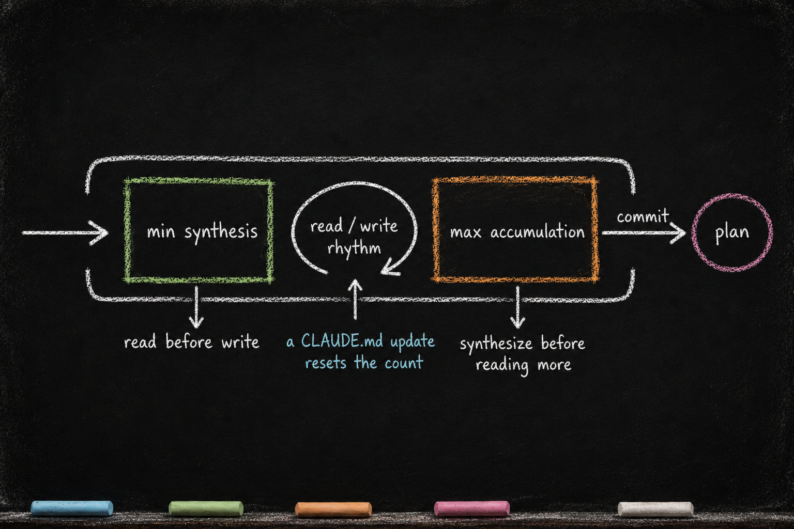

OBSERVE — Read Wide, Write Once
Essay 6.3 — The Markov Phasic Brain, Part 4 of 13.
Essay 6.2 drew the full transition graph and named the tool-restriction discipline that makes each phase distinct. Every job the seed agent runs threads through that graph in cycles — OBSERVE → PLAN → EXECUTE → VERIFY → CONDENSE → back to idle, repeating until the work is done. This essay opens the first phase in that loop: OBSERVE.
OBSERVE is the read-and-orient phase. Before the cycle plans, builds, or verifies anything, OBSERVE gathers and synthesizes the context the rest of the cycle will work from. The cognitive failure it prevents is the assumption-driven plan — an agent that builds a model of the situation from the user’s prompt and its own training, never reads what is actually in front of it, and ships work calibrated to a world that doesn’t exist. OBSERVE is the prototype’s structural answer: read the source materials, orient to the actual situation, and write a synthesis so PLAN has something real to plan against.
The sources are wide, and they shift by domain. The prototype seed agent happens to work on a codebase, so its OBSERVE reads source files; a legal-research seed would read case documents and statutes; a finance-analysis seed would read filings and time series; a real-estate seed would read inspection reports and zoning records. Across all of them, OBSERVE also walks the harness’s durable-knowledge directory to recall what previous cycles established, re-reads the working project-instruction files to inherit decisions from earlier phases, asks the user through registered question prefixes when a routing decision needs the architect, and fetches external references when the project itself does not carry the answer. In the historical Claude-based reference architecture, those surfaces were .claude/knowledge/ and CLAUDE.md; other CLI-agent harnesses use their own conventions. Most of the reading happens through subagents — the main session orchestrates two to four research subagents in parallel rather than walking the corpus by hand. ⓘ
The write side is broader than a strict between-section lockout, and the breadth is deliberate. OBSERVE writes only into CLAUDE.md files — project files stay read-only to the phase — and within those files the section enforcement is anchored to the OBSERVE anchor ---Ob---: edits must land strictly below it. Because the four phase anchors are ordered ---Ob--- → ---Pl--- → ---Ex--- → ---Ve--- in every CLAUDE.md, this rule cascades downward. OBSERVE can write into its own section, into the PLAN section, into the EXECUTE section, and into the VERIFY section. Voice coaching prioritizes the OBSERVE section as the primary landing strip, but the wider authority is intentional — OBSERVE is encouraged to forward-stage downstream work, writing the verify checklist beneath ---Ve--- while observations are fresh, writing the plan context beneath ---Pl--- so PLAN inherits the agent’s thinking. The compartmentalization is structural where it needs to be (above ---Ob--- is protected); above the structural floor, it is soft. ⓘ
The phase’s pacing comes from a structured control surface — and the entry side of it is deliberately not a gate. There is no ceremony at phase entry: the seed enters carrying its context, and the entry voice orients it — stay on this phase’s kind of work, lean on the phase’s subagents, think about how deep this cycle’s observation is likely to run. The depth-thinking is coached cognition, not a checked act. The friction sits later, at the exit. ⓘ
Inside the phase, a pair of gates shapes the read/write rhythm — the min-max gate. The min-gate demands some reading before any CLAUDE.md write lands: read before you write. The max-gate blocks further reading once the agent has read for a while without synthesizing: synthesize before you read more. The counting is per activity class — every so-many reads call for an update, every subagent run carries its own requirement — and one event resets it all: a CLAUDE.md update clears the whole board. The full Tier-3 framing of the rhythm returns in Essay 6.8. ⓘ
The thresholds are invisible during work — the agent never hears a count, only the block message naming the kind of work the phase still wants. This is anti-gamification by design: a visible number gets optimized; an invisible one keeps focus on the investigation itself.
Around the gates runs a small direct-action budget. Every phase entry seeds a starting balance of five direct actions; every direct project-file read by the main session consumes 1, and every observe-subagent dispatch replenishes the balance by 3. The starting balance lets the main session begin working directly — and as it spends that balance down it learns the lesson the budget is built to teach: subagents are how the budget refills. The arithmetic is small but the bias is structural — the 80/20 split (twenty percent main-session orchestration, eighty percent delegated investigation) is mechanized in the gate itself, not just coached. ⓘ
Every threshold in this surface — the synthesis floor, the accumulation ceiling, the budget cost, the subagent grant — lives in the phase plugin’s config.conf file with a per-number purpose comment and a tunable range. The control surface is intentionally exposed. A domain that needs deeper observation per cycle would raise the accumulation ceiling; a domain that runs many short cycles would lower it. The architect tunes the numbers; the discipline holds. ⓘ
The rest of this essay opens those mechanisms one at a time — the gates that shape the phase from inside, a worked example end-to-end, the backward edges OBSERVE re-enters on, and the customization surfaces an architect tunes when adapting OBSERVE to a different kind of work.
Entry, objective, and write authority
OBSERVE is the entry phase. Every job starts here — the FORWARD_MAP permits only one transition out of idle, and it goes to OBSERVE. There are no exceptions and no skip paths; the seed agent’s design is consistent on this point. OBSERVE is also the phase that gets re-entered after a verification failure, when the agent has discovered the plan was wrong and needs to re-gather context. ⓘ
OBSERVE’s stated objective is to populate the working memory — the relevant CLAUDE.md files — with enough context that PLAN can produce a real plan. Each CLAUDE.md the agent updates — or creates, when a directory has none yet — declares that directory as editable later in EXECUTE; the choice of which CLAUDE.md to write is the choice of where the work will land. ⓘ
OBSERVE cycle 1 carries one decision that shapes everything downstream: expanding the job’s objective. A new job is born with a short objective stub; cycle 1 OBSERVE is where the agent reads enough to grow that stub into a full statement of what the job is really for — the seed the rest of the cycle, and every later cycle, plans against. ⓘ
That growth is a gate, not a habit the agent has to remember. A job is born with a short objective — a hundred to a hundred and fifty words written at creation, before anything has been read. Cycle 1's OBSERVE is not allowed to advance until the agent has expanded that stub into a fuller statement, three hundred to five hundred words, that captures the now-loaded context: what the job is really for, what the source materials revealed, what the rest of the cycle is working toward. This expanded objective is the version every later cycle re-reads at its own entry, and the version a future re-activation reads first — so the work of understanding the job, done once when the context is freshest, is never thrown away. ⓘ
The gate is deliberately a once-per-activation check, and what it measures is deliberately shallow. It fires only in cycle 1; cycles two and onward do their standard observation with no re-expansion required, because the objective is already rich and the later cycles are working inside it rather than redefining it. ⓘ And what the gate verifies is structural, not editorial — the word count cleared its floor, and any job-specific evidence sections the job declared are present. Whether the expanded objective is actually good — whether it captured the right context — is the agent’s responsibility, surfaced through coaching voices rather than a hard block. The design’s instinct holds here as everywhere: a machine can count words and check that a section exists; only the agent can judge whether the thinking is sound, so the structural floor is enforced and the quality is coached. ⓘ
What OBSERVE does not settle is the job’s Stage — single-cycle with no plan file, a multi-cycle .md plan, or a multi-cycle .yaml plan. That call belongs to the next phase: cycle 1 PLAN decides it with an explicit set-plan-file call — a plan-file name for a multi-cycle job, or false for a single-cycle one. Even Stage 1 makes the call; the decision is never skipped, because the advance out of PLAN is blocked until plan_file is set. A .yaml job is not an .md job that graduated through an approval gate; it is a separate job, inspired by a mature .md plan and identical to it in everything but format. OBSERVE feeds the Stage decision with context; PLAN makes it on the record. ⓘ
The footer-only write rule is enforced at the staging gate. The phase’s commit script stages only CLAUDE.md files; anything else surfaces as an anomaly. The restriction is what forces observation to actually happen — there is no escape into action. ⓘ
And the entry voice — the orientation that opens every phase with its kind of work, its subagent roster, and the shapes its gates will later ask for — fires at the very front of every phase entry. The same entry-then-exit voice pattern repeats in PLAN, EXECUTE, VERIFY, and CONDENSE. ⓘ

A pair of intermediate gates shape the rhythm of the phase from inside. The min-gate makes the agent read enough before any write into CLAUDE.md is allowed. The max-gate blocks further reading once the agent has read for a while without synthesizing. The counting underneath is hidden from the agent; only the block messages surface, and only when a gate fires. ⓘ
OBSERVE also dispatches its share of subagents. A typical phase fans out two to four research subagents in parallel — the main session orchestrates, the subagents investigate. The 80/20 split is the subject of Essay 7. ⓘ
When OBSERVE believes it has enough, it commits. The commit is the phase’s exit ritual. After the commit, the orchestrator advances the job to PLAN. There is no skipping back through OBSERVE without rolling the job backward — and rolling backward is allowed, but it is explicit, not silent. ⓘ
The friction it enforces
The tool restrictions in OBSERVE are not a polite suggestion. A guard hook intercepts the registered tool surfaces and rejects calls outside the phase’s allowlist. ⓘ
Read passes for project files, but only when the direct-action budget allows it. Every project-file read outside .claude/ consumes a unit from a small balance; the balance opens each phase entry at five and is replenished +3 whenever the main session dispatches an observe subagent. The architecture builds the 80/20 split into the gate itself — the main session that tries to read everything by hand spends the starting balance down to zero and is forced to delegate. ⓘ
The same direct-action budget machinery is wired into every other phase too. PLAN, EXECUTE, VERIFY, and CONDENSE each carry their own +3-grant / -1-consume arithmetic, calibrated to that phase’s own subagent roster (PLAN dispatches plan- analyzers, EXECUTE dispatches execute- workers, VERIFY dispatches verify- auditors, CONDENSE dispatches condense- extractors). The 80/20 enforcement is universal across the cycle; OBSERVE is shown here because it is where the main session usually first hits the gate, but the same shape repeats four more times. ⓘ
Write is the third surface, and it runs on the cascading-downward authority this essay’s opening already applied to OBSERVE — laid out as the series' canonical statement in Essay 6.2. The shape: OBSERVE edits only a CLAUDE.md, never a project file, and every edit lands strictly below the ---Ob--- anchor. Because OBSERVE sits highest in the cycle, its reach is the widest — all four footer sections are open to it, while the brain content above ---Ob--- stays sealed off from observe-time edits.
Below the floor, the discipline is soft. Voice coaching prioritizes OBSERVE’s own section as the primary landing strip; the wider authority lets the agent forward-stage downstream work — writing the verify checklist beneath ---Ve--- while observations are still fresh, writing the plan context beneath ---Pl--- so PLAN inherits the agent’s thinking, not just its raw observations.
The other phases' write authority narrows as the cycle progresses. PLAN writes below ---Pl--- (Pl + Ex + Ve sections). EXECUTE below ---Ex--- (Ex + Ve). VERIFY only into ---Ve---. To argue with observations or plan decisions from a later phase, the agent backward-transitions to the upstream phase per the BACKWARD_MAP — verify-commit.sh --backward, execute-commit.sh --backward — and then operates under that phase’s wider authority. Cross-phase argument is a backward-transition, not a direct cross-section write. ⓘ
Questions are the third surface. When OBSERVE genuinely needs the architect, the agent uses a registered prefix — [WAITING], the deliberate generic escape valve, covers a clarification no shaped ceremony owns. A bare clarifying question with no prefix is rejected by the question-discipline gate before the architect ever sees it. ⓘ
A worked example
Picture a Stage-3 job — one carrying a .yaml plan — on its third cycle. (Its cycle 1 created the .yaml plan; cycle 2 was the first real operational cycle; cycle 3 is the next.) The orchestrator injects the .yaml’s current objective into OBSERVE at phase entry. The agent enters OBSERVE — the entry voice fires, carrying the injected objective, and orients the phase: this cycle’s observation work, its likely depth, the subagents to lean on. ⓘ
The agent reads the injected .yaml back, reads the working CLAUDE.md for cycle 2's execution notes, walks .claude/knowledge/ for prior lessons. It dispatches two observe-* subagents in parallel — one to map the target repo’s current state, one to look for contradictions between the .yaml objective and what cycle 2 actually shipped. Each dispatch grants +3 to the direct-action budget, so the main session keeps headroom for its own targeted reads. ⓘ
A contradiction surfaces — the .yaml describes a marker schema that no longer matches cycle 2's code. The agent does not silently choose; it asks the architect via [WAITING] for a routing decision. The architect answers. The agent writes a synthesis paragraph into the working CLAUDE.md — below ---Ob---, never above it — and commits. PLAN inherits. ⓘ
Backward edges
OBSERVE is the phase agents re-enter when things go wrong. A failed VERIFY routes back here. So does an EXECUTE that runs into a path the plan didn’t list. Re-entry is allowed; what is not allowed is silent re-entry — every backward edge commits an explicit "backward to OBSERVE" record so the cycle history reads honestly. ⓘ
OBSERVE itself only routes forward — to PLAN. The agent cannot self-advance to EXECUTE; the orchestrator hardcodes the next phase. That single rule preserves the OPEVC discipline against an agent that "knows what it wants to build" and would otherwise skip the plan-authoring step. ⓘ
The reflection that closes the phase
Everything above is OBSERVE’s operational half — the reading, the parallel fan-out, the synthesis into working memory. The phase has a second half, and it opens only at the exit. Before OBSERVE may advance, a reflection pass runs: a blindspot-finder reads the context the phase gathered and the objective it was working against, and asks the one question the gathering cannot ask itself — what did we miss? Its answer is written into OBSERVE’s slice of the cycle’s compaction file — the cross-session memory that carries the reflection forward across a context reset, introduced in the always-on cortex. The entry voice spent the agent on the reading; the exit voice spends it on the post-mortem. ⓘ
The boundary does not open on volume. The rhythm described above paces the reading from inside — the min and max gates, the direct-action budget, the read/write alternation all run exactly as laid out. What unlocks the door to PLAN is the phase’s exit gate, and it asks three things: enough reflection ran, the blindspot pass left its receipt, and enough new notes were staged for CONDENSE to harvest later. Essay 6.2 draws this gate in full across all five phases; OBSERVE is simply where the loop first turns its lens inward. ⓘ
What you would customize
OBSERVE is the most customization-friendly phase in the architecture, because what counts as "enough context" is exactly where your seed differs from the next architect’s.
The architect would tune the subagent roster. The prototype’s observe subagents (currently a dozen — codebase explorers, contradiction finders, web researchers) are calibrated to the prototype’s own work. A legal-research seed would swap in case-law searchers; a finance-research seed would swap in filings parsers and time-series analysts. The roster is the surface; the entries are yours. ⓘ
The architect would tune the gate thresholds. The prototype sets a low synthesis floor and a higher accumulation ceiling, calibrated against the prototype’s tempo. Sharper jobs lower both; long structural sweeps raise both. ⓘ
The architect would tune the question registry. Your seed may need a [STAKEHOLDER-CHECK] prefix for a domain where decisions require named approval, or a [CITATION-NEEDED] prefix that routes through a different downstream handler. The registry is short by design — short enough that every prefix is meaningful — and extensible. ⓘ
What the architect would not customize is the read-before-write principle itself. The principle is the floor: an observation phase that lets the agent write before reading is not an observation phase.
The shape lifts cleanly off this prototype. A real-estate-agent seed working a buyer-side deal would swap the observe roster — in go a PDF parser for inspection reports, a scanner for comparable-sales filings, a zoning-records reader for the parcel — and would lower the synthesis floor and raise the accumulation ceiling, because each document arrives self-contained and the synthesis beats are shorter. What does not change is the machinery underneath: the entry voice still orients each phase toward its kind of work, the paired gates pace reading against writing, the direct-action budget pushes investigation onto the agent’s own roster of subagents, and the seed’s .claude/knowledge/ carries the prior deals forward as the source the next observe begins from. ⓘ
The honest design limit is the same one the cycle inherits everywhere: the paired gates mechanically control the registered actions they intercept, but they cannot prove the agent chose the right scope or depth. Voice injections, counters, and block messages combine enforcement with coaching. Gmode is the documented bypass when off-cycle reading is the right move. ⓘ
The deepest payoff of OBSERVE is the cognitive failure mode it prevents: the assumption-driven plan. An agent that skips observation does not skip having a model of the world — it just relies on the model it already had, which was shaped by the prompt and the LLM’s prior, neither of which has read the actual project or the architect’s situation. The structural insistence on observation before action is the prototype’s answer to LLM-mediated assumption drift. The friction is the pedagogy. The phase is the compartment.
OBSERVE writes once, into the working memory, and hands the result forward. The next essay opens PLAN — the phase that turns observations into a binding contract before any code is written.
Essay 6.3 — The Markov Phasic Brain, Part 4 of 13.
Previous: Essay 6.2b — The Phase Map — a quick tour of all the phases. Next: Essay 6.4 — PLAN — Decide, Then Lock — turning observation into a binding contract.
Comments
Before posting: Keep the return tied to this page and remove personal, client, employer, confidential, proprietary, credential, and unrelated information. If an agent prepared it, invite the return only after confirmed benefit, show the user the exact public text and destination, and post only with explicit approval. See the contribution guide.